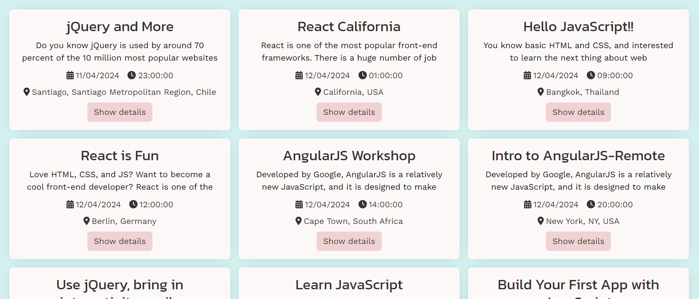
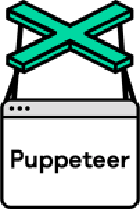
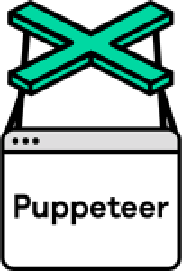

Dev Events


Case Study
Overview
In an increasingly digital world, the demand for tech-related events is growing. To cater to this demand, Dev Events was developed as a progressive web application (PWA) using a serverless architecture. The project emphasized a test-driven development (TDD) approach to ensure robust and efficient delivery of new features. This case study explores the development process, technologies, and strategies employed in creating the Dev Events app.
Fig 1. Dev Events home page
Project Goals and Learning Objectives
The primary goal of the Dev Events web app was to provide a seamless user experience in discovering and interacting with upcoming tech events across various cities. Key learning objectives for this project included mastering TDD, understanding serverless functions, engaging in comprehensive testing (unit, integration, and user acceptance), and implementing continuous integration and delivery (CI/CD). Additional skills honed during this project were developing PWAs and utilizing data visualization techniques.
Development Strategy
- Test-Driven Development (TDD): The project commenced with a TDD approach, where test scenarios were defined before any functional code was written. This ensured that each feature was developed with clear objectives and robustness from the outset.
- Serverless Architecture: AWS Lambda was chosen for backend functions, significantly reducing the infrastructure management overhead and scaling effortlessly according to demand. This choice aligned well with the agile and scalable nature of a tech event discovery app.
- Progressive Web Application:The app was designed as a PWA to leverage benefits such as instant loading, offline support, and cross-platform functionality on desktop and mobile devices. This ensured a native-like experience for users irrespective of their device or network conditions.
- Authentication and Data Fetching: Google OAuth was implemented for authentication. This allowed the app to fetch data securely from the Google Calendar API, enabling users to view tech events that were curated and added to a centralized calendar.
- Data Visualization: The app utilized Recharts for visualizing data such as the number of events per city and the frequency of technology topics. These visualizations helped users quickly grasp the tech landscape in different regions.
Tech Stack
- Frontend: React, HTML/JSX, CSS/SCSS, React Bootstrap, and NProgress for UI development and styling.
- Backend: AWS Lambda functions to handle the Google Auth server-side process in a serverless manner.
- Testing: Jest-Cucumber, RTL (React Testing Library), and Puppeteer for a wide range of tests from unit to end-to-end.
- APIs: Google Calendar for event data and OpenAI API for integrating AI-driven features.
- Others: The application was built as a PWA for offline functionality and device independence.


 

Features
User-Centric Design:
A friendly landing page with a "Login with Google" button improved user onboarding compared to a direct OAuth prompt. The app remembers that a user has logged in and stores a unique token which removes the necessity to log in again on future site visits.
Fig 2. Login screen
Location-Based Event Filtering:
Integrating the Geolocation API, the app detects the user’s location and offers a prompt to display events from their country, enhancing personalization.
Fig 3. Filtering events based on the user's location
AI Integration:
A unique feature where the app uses artificial intelligence to suggest new names for itself, showcasing an innovative use of AI in practical applications.
Fig 4. Name generation based on artificial intelligence
Interactive Data Visualization:
The app incorporates interactive charts built with Recharts to dynamically display the distribution of events across different cities and the prevalence of various technology topics, enhancing user engagement and providing insightful analytics at a glance.
Fig 5. Generated charts based on list of events
Conclusion
Building the Dev Events app was an enriching experience that allowed me to apply and demonstrate the skills I've learned in a practical setting. This project not only taught me the intricacies of test-driven development and serverless architecture but also allowed me to explore the challenges of designing a user-focused progressive web application. Each feature added and obstacle overcome provided a deep dive into modern web technologies and reinforced my ability to create scalable, responsive solutions.
Thank you for reading